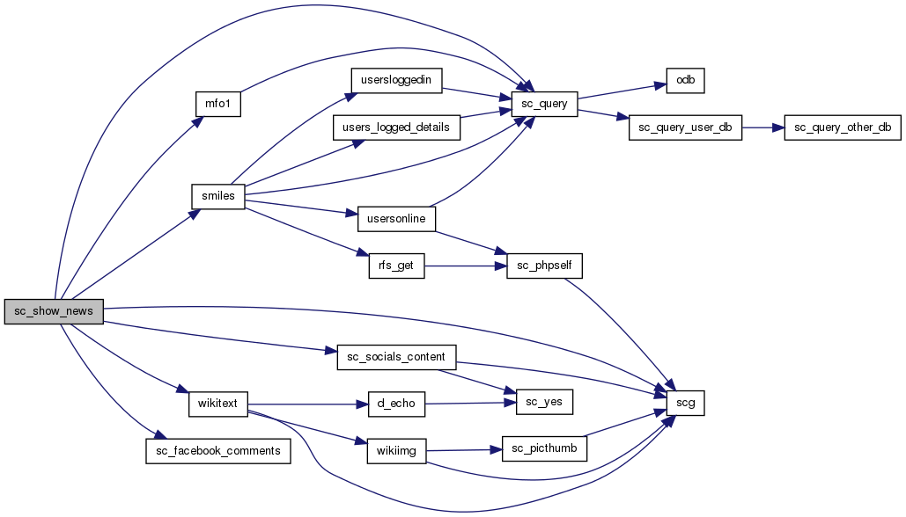
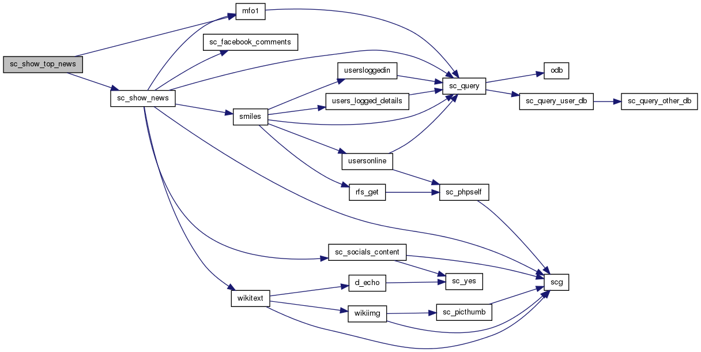

lib.news.php File Reference
Go to the source code of this file.
Functions | |
| adm_action_lib_news_news_submit () | |
| adm_action_lib_news_news_edit () | |
| sc_module_mini_news ($x) | |
| sc_module_popular_news ($x) | |
| sc_module_news_top_story () | |
| sc_getnewstopstory () | |
| sc_getnewsdata ($news) | |
| sc_getnewslist ($newssearch) | |
| sc_get_news_headline ($id) | |
| sc_get_top_news_id () | |
| sc_show_top_news () | |
| sc_show_news ($id) | |
| put_news_image ($fname) | |
| updatenews ($nid) | |
| deletenews ($nid) | |
| deletenewsgo ($nid) | |
| editnews ($nid) | |
| shownews () | |
Function Documentation
| deletenews | ( | $ | nid | ) |
| deletenewsgo | ( | $ | nid | ) |
| editnews | ( | $ | nid | ) |

| put_news_image | ( | $ | fname | ) |
| sc_get_news_headline | ( | $ | id | ) |
| sc_getnewsdata | ( | $ | news | ) |
Definition at line 113 of file lib.news.php.
Here is the call graph for this function:
Here is the caller graph for this function:
| sc_getnewslist | ( | $ | newssearch | ) |
Definition at line 119 of file lib.news.php.
Here is the call graph for this function:
Here is the caller graph for this function:
| sc_module_mini_news | ( | $ | x | ) |
| sc_module_popular_news | ( | $ | x | ) |
| sc_show_news | ( | $ | id | ) |
Definition at line 150 of file lib.news.php.
Here is the call graph for this function:

Here is the caller graph for this function:
| sc_show_top_news | ( | ) |
Definition at line 146 of file lib.news.php.
Here is the call graph for this function:

Here is the caller graph for this function:
| shownews | ( | ) |
| updatenews | ( | $ | nid | ) |